Paving Design Expert 2.2
Cloning projects
There are situations where elements of the project are repeated in different places.
In the figure below, if you look closely, you can see that the upper boundary mount of the
square border repeats the bottom mount and border left mount - the right one.
And all four corners are the same. And they all are the same as mounts of other square
(it is not visible in the figure). Rather than drawing all of these copies, you can make
clones of the project. Clone - it's not a project. It can not be changed - no borders,
no pattern or color of the tiles. In clone everything changes in the original project.
Number of tiles in the clone is taken into account
in the report of the project.
Begin to create clones. Since we have an active project "Corner edging", begin here. On the lower toolbar click "Project clones" 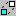.
Begin by creating a clone in the lower right corner of the square. We create a clone, at the same level of height as the original. This means you need to enter "1" in the "Quantity" field and "1.8" in the "on X-axis" field. "1.8" - is 1.8 meters.
In the lower right corner there is the same project. Please note that a string of coordinates appeared in the list of clones. These are the absolute coordinates of the base point of the clone in the drawing.
Now create a clone in the upper left corner.
Now clone for the upper right corner. It requires the displacement of 1.8 m in both axes.
The principle is clear; zoom out to see the second square.
Create clones of angles for the second square.
The corners are done. Let’s create clones for edges of the square sides. Choose from a list of projects the "Horizontal edging" project. Below this project clones coordinates are shown.
The same goes for the "Vertical edging".
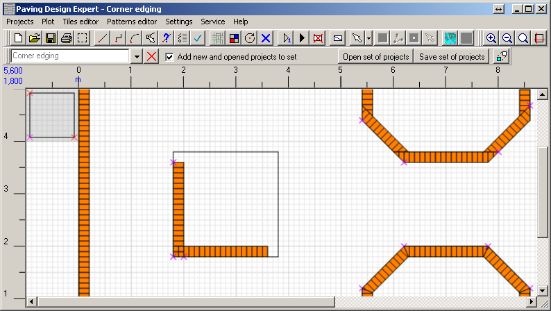
Begin to create clones. Since we have an active project "Corner edging", begin here. On the lower toolbar click "Project clones" 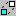.
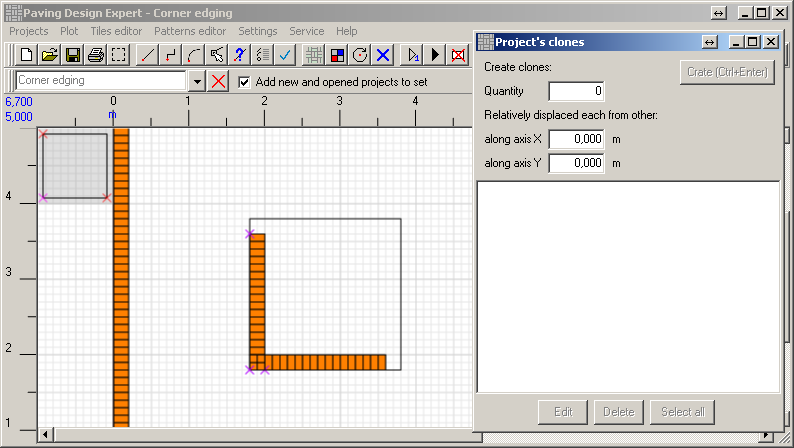
Begin by creating a clone in the lower right corner of the square. We create a clone, at the same level of height as the original. This means you need to enter "1" in the "Quantity" field and "1.8" in the "on X-axis" field. "1.8" - is 1.8 meters.
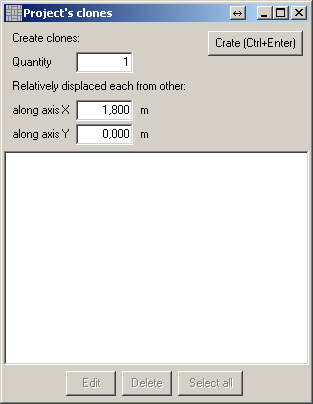
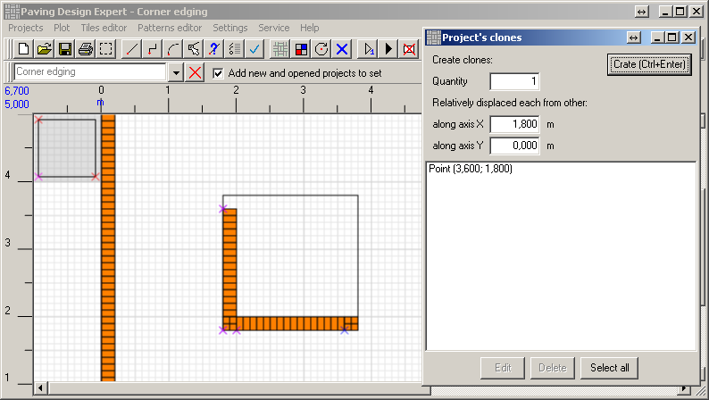
In the lower right corner there is the same project. Please note that a string of coordinates appeared in the list of clones. These are the absolute coordinates of the base point of the clone in the drawing.
Now create a clone in the upper left corner.
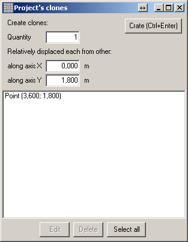
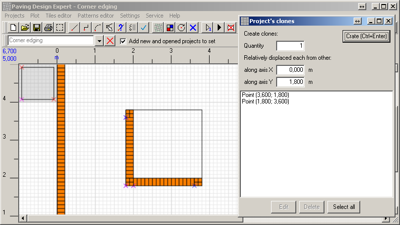
Now clone for the upper right corner. It requires the displacement of 1.8 m in both axes.
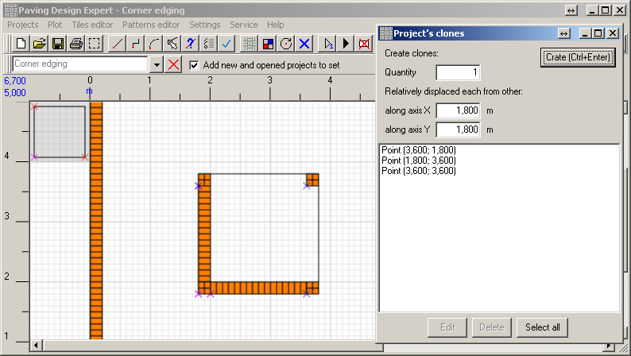
The principle is clear; zoom out to see the second square.
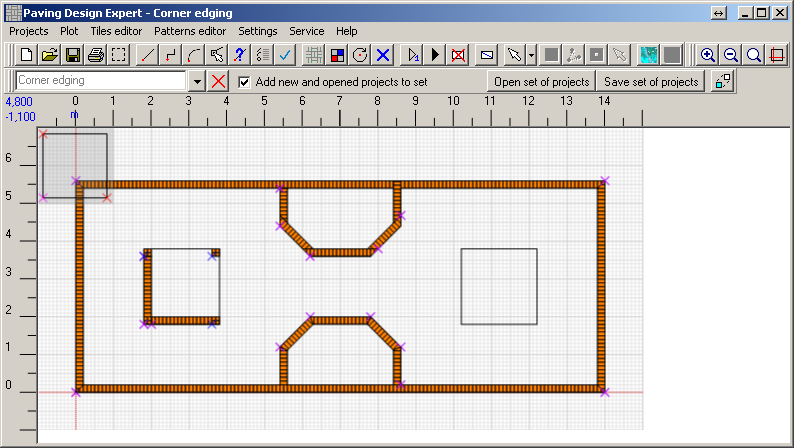
Create clones of angles for the second square.
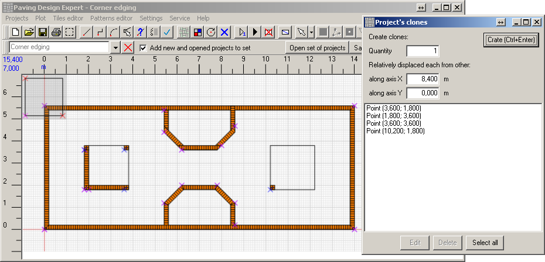
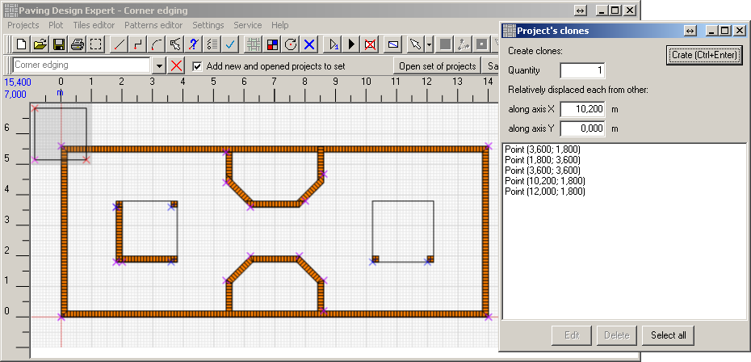
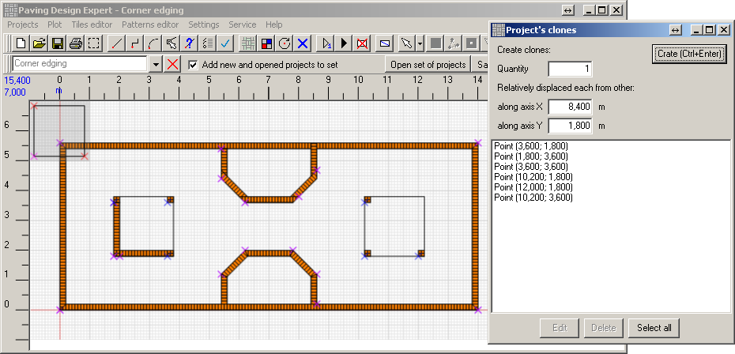
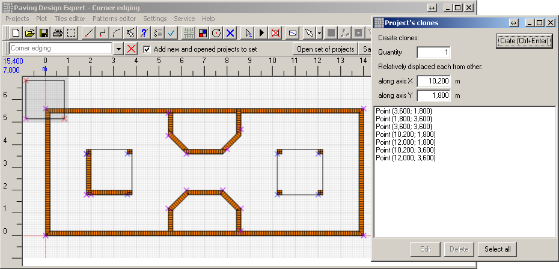
The corners are done. Let’s create clones for edges of the square sides. Choose from a list of projects the "Horizontal edging" project. Below this project clones coordinates are shown.
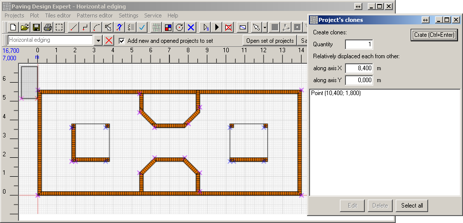
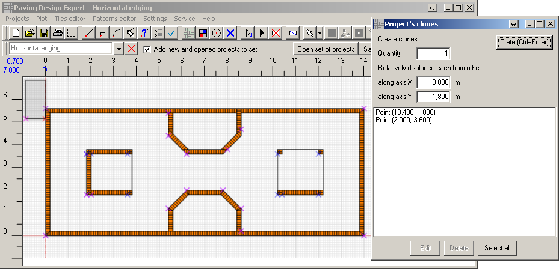
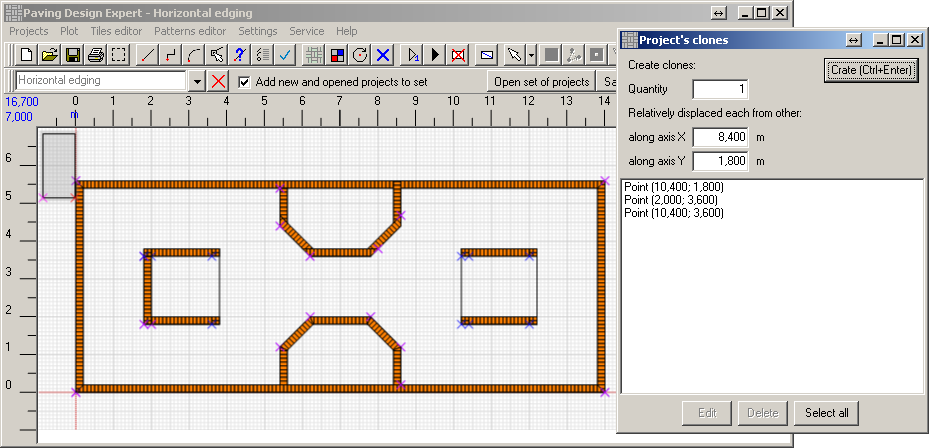
The same goes for the "Vertical edging".
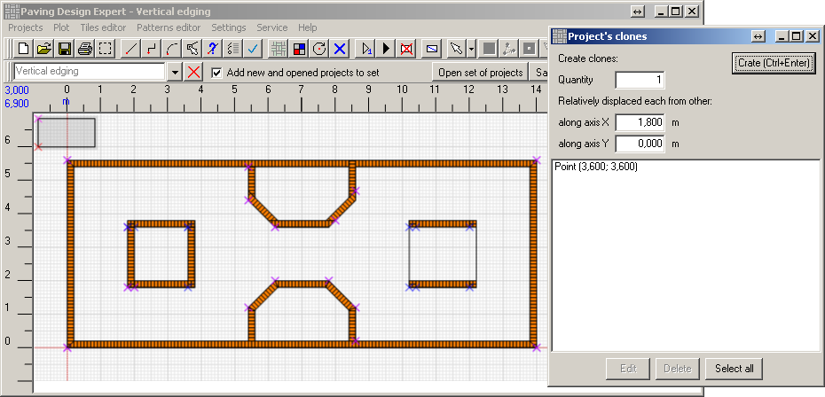
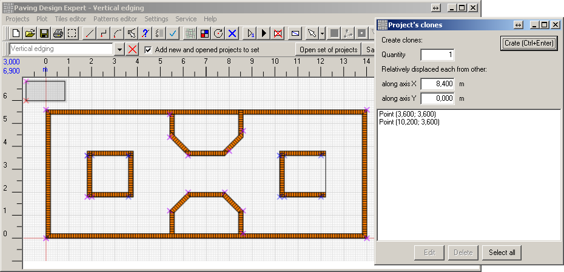
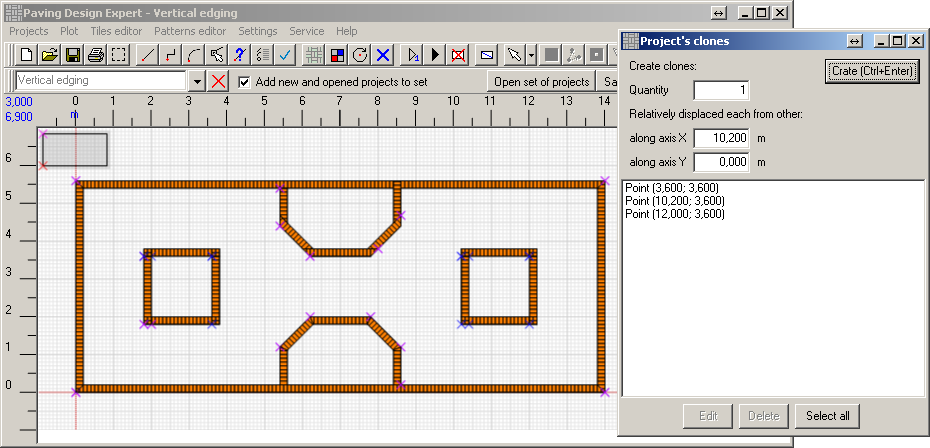